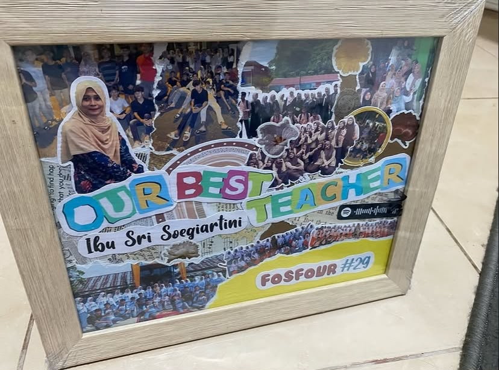
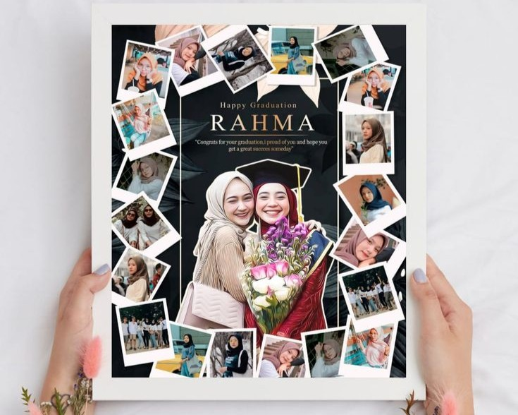

🖼️
Bingkai Kolase Foto
Kumpulan foto kenangan disusun jadi satu kolase custom, lengkap dengan judul dan bingkai kayu.
- Custom judul & nama
- Cetak foto tempel tangan
- Bingkai kayu siap pajang
🐾 TOKO KADO HANDMADE
Muchan Craft bikinin bingkai kolase foto, kartu cetak seni, dan album foto DIY yang dibuat tangan satu per satu — cocok buat kado guru, sahabat, atau pasangan tersayang.
🐾 TENTANG MUCHAN CRAFT
Kami mengubah foto dan cerita kamu jadi barang kenangan yang bisa dipegang, dipajang, dan disimpan lama — semua dibuat tangan dengan sentuhan pastel yang hangat.
Setiap kolase, bingkai, dan album ditempel dan dirangkai satu per satu, bukan cetakan massal.
Nama, foto, warna, sampai pesan tulisan tangan — semua bisa disesuaikan sama cerita kamu.
Dikemas rapi dengan wrapping pastel supaya tetap cantik sampai di tangan penerima.
🐾 PRODUK KAMI
Dari kado wisuda guru tercinta, kartu cetak buat pajangan, sampai album mini buat kado ulang tahun pasangan.
Kumpulan foto kenangan disusun jadi satu kolase custom, lengkap dengan judul dan bingkai kayu.
Set kartu cetak bergambar ilustrasi lembut, cocok buat pajangan, hadiah, atau koleksi pribadi.
Mini album foto handmade berbentuk unik (seperti kamera!) berisi foto dan pesan tulisan tangan.
🐾 JEJAK KARYA

Kado Guru Tersayang Kartu Cetak Taman
Kartu Cetak Taman Album Kamera Mini
Album Kamera Mini
Kolase WisudaKirim foto-foto kamu, ceritakan momennya, dan biarkan kami yang rangkai jadi karya handmade.
Chat & Pesan Sekarang 🐾